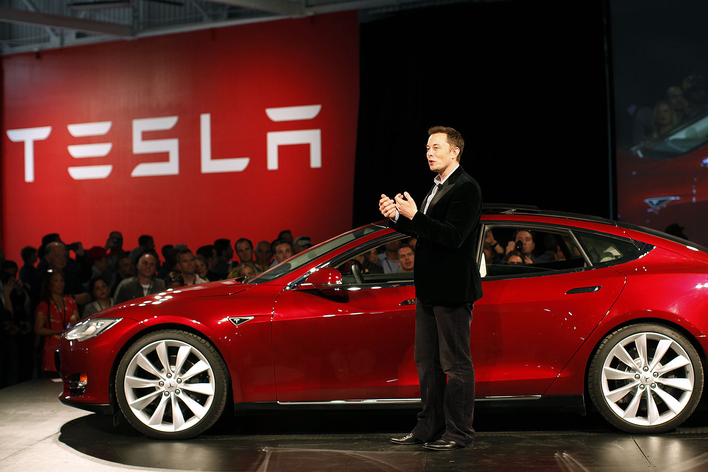

Tesla Motors була заснована через рік після створення SpaceX, в 2003 році, в честь сербського вченого Ніколи Тесли,
який є винахідником електродвигуна зі змінним струмом. Сферою діяльності цієї компанії є створення екологічно чистих
електромобілів.
У 2007 компанія ледь не збанкрутувала.
Компанія Tesla перебувала в кризовому становищі. У грудні 2007 року президентом компанії був призначений Зеєв Дрора, успішний високотехнологічний підприємець. Під керівництвом Дрора 10 % співробітників були звільнені, але компанія стала прибутковою.
29 червня 2010 року було проведено IPO компанії, для залучення додаткових інвестицій, по $17/акцію. Компанія привертає інвестицій у розмірі $226 мільйонів. На день закриття торгів, акції Tesla (#TSLA) підскочили до позначки $23,89.
27 жовтня Tesla Motors відкриває фабрику, де виробляють Model S.
Перший автомобіль, доступний для продажу, Tesla Motors представила в 2008 році під назвою Tesla Roadster. І хоч автомобіль не так схвально був зустрінутий, Ілон Маск і його компанія наполегливо працювали над досконалішими електромобілями і в 2011 році була представлена Tesla Model S.
27 вересня 2012 року була запущена революційна мережа супер-заправок для подорожі на далекі дистанції.
22 травня 2013 року Tesla виплачує кредит в розмірі $465 млн від Міністерства енергетики на 9 років раніше терміну.
З 28 січня по 2 лютого 2014 року — п'ять діб, саме стільки тривала подорож через Сполучені Штати, із західного узбережжя до східного. Дві Tesla Model S прибули до Нью-Йорку, встановивши рекорд швидкості для електромобілів, які перетнули США. Для підзарядки використовувалися тільки «суперчарджери» (електро-заправні станції). Поїздка з Лос-Анжелеса зайняла 76 з половиною годин, та коштувала $0, встановивши тим самим рекорд Гіннеса.
Команді з 15 осіб по дорозі в Нью-Йорк довелося подолати як снігові так і піщані бурі, температури нижче нуля, дощ, страждати від недосипання. Після перетину фінішної лінії їх привітав генеральний директор Tesla — Ілон Маск. Що цікаво, єдиним автомобілем, який зламався в дорозі, був фургон підтримки з бензиновим двигуном.
Наприкінці 2014 року, Tesla Motors представила Tesla Model X — новий електромобіль-кросовер.
У 2016 році була презентована нова бюджетна модель — Tesla Model 3.
2016 року відкриється виробництво електричних акумуляторів на Гігафабриці 1 у Неваді, що використовуватимуться зокрема для електромобілів Tesla.
На даний момент ціна акції компанії досягає позначки в $231,55, ринкова капіталізація сягає $29 млрд.